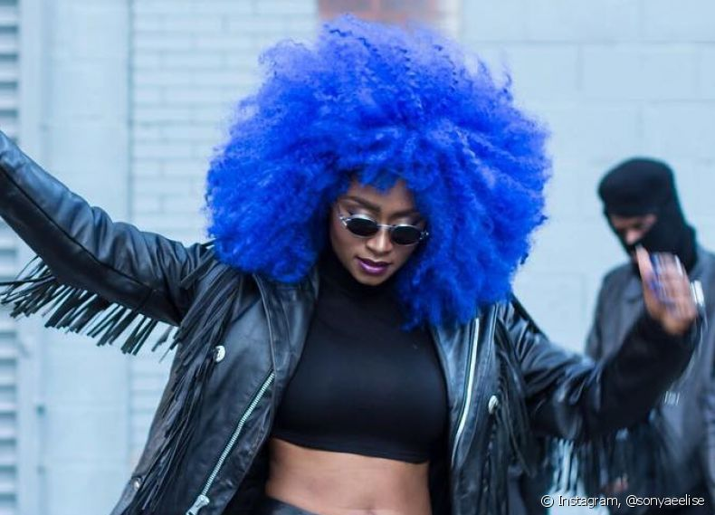
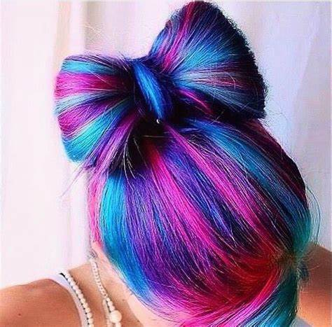

Tintura colorida estraga o cabelo? clique na matéria para saber.

O Empoderamento com cores esta cada vez mais presente. Mitos e verdades sobre cabelos coloridos. "idosos também se divertem!" alega dona martha após ser criticada por pintar o cabelo.

10 Tipos de penteados para arrazar com suas cores! "Cacheadas também podem pintar o cabelo?" Mas é claro!